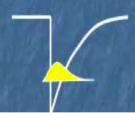
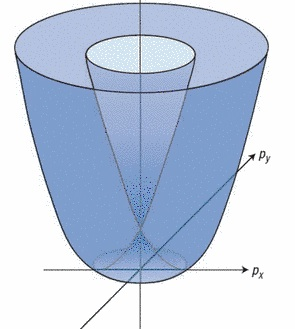
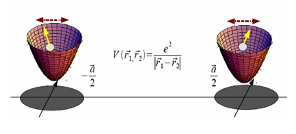
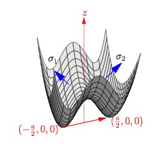

van der Waals interaction between spins
Interacting electrons in low-dimensional settings are often subject to
symmetry-lowering spin-orbital interaction (SOI), which is unavoidable
in systems with structure inversion asymmetry. The SOI is described by the Rashba
Hamiltonian
HR = &alphaR (&sigmax py - &sigmay px).
It breaks inversion symmetry but remains invariant under time-reversal. For free electrons it
modifies the dispersion as shown in the right figure.
|
 |
 |
Consider now a model system of two single electron quantum dots, located some distance
apart from each other. Each dot is obtained by gating 2D electron gas and thus possesses SOI,
which ties orientation of electron's spin with its orbital motion. Coulomb interaction between
electrons in the two dots in turn correlates their orbital motion (simply put, the electrons
maximize the distance between them). Thus it is natural to expect that spins of the two
electrons are correlated as well. Note that no tunneling between the dots is required.

Our calculations, reported in Spin-orbit mediated anisotropic spin interaction in interacting electron systems, Suhas Gangadharaiah, Jianmin Sun, and Oleg A. Starykh,
Phys. Rev. Lett. 100, 156402 (2008), confirm this expectation fully.
The spin coupling mechanism is very similar to the standard van der Waals interaction:
HvdW = - &alphaR4 e4/(4 a6
&Omega5) &sigma1z &sigma2z.
(Here &Omega is the frequency of
parabolic confining potential that defines the dots.) Note that this novel, non-exchange coupling
is of Ising type, and is ferromagnetic . We expect it to become particularly
important in removing large spin degeneracy (responsible for Pomeranchuk effect)
of low-density electron Wigner crystal:
exponentially weak multi-particle exchange processes are bound to loose to the
non-frustrated and slowly decaying Ising coupling of van der Waals type.
We have also considered how SOI affects exchange interaction between spins in the limit
of strong tunneling as well. Contrary to many naive expectations (but in agreement with
L. Shekhtman, O. Entin-Wohlman, and A. Aharony, Phys.Rev.Lett. 69,836 (1992)),
SOI does not break spin-rotational symmetry in &alphaR2 order.
The resulting asymmetrc exchange contains, in addition to the famous Dzyaloshinskii-Moriya
interaction, a pseudo-dipolar &Gamma-term and the two conspire to preserve the symmetry to
at least &alphaR4 order.
